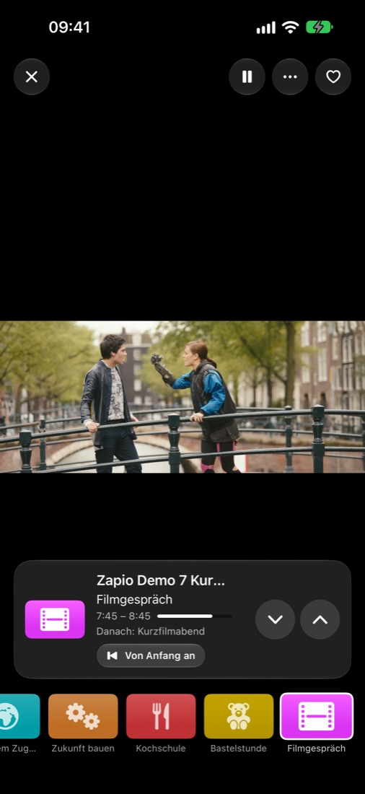
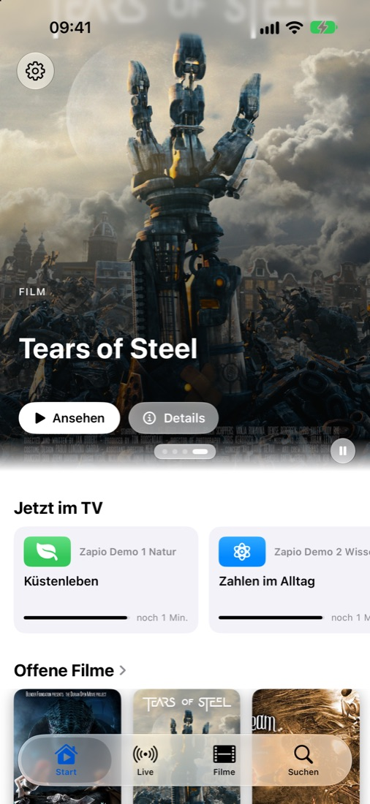
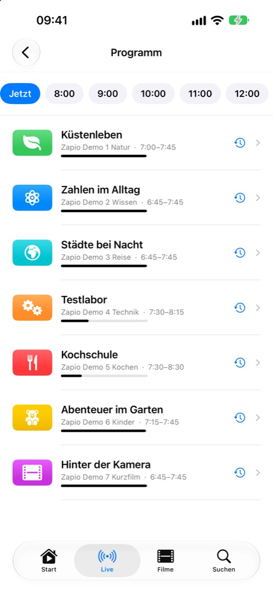
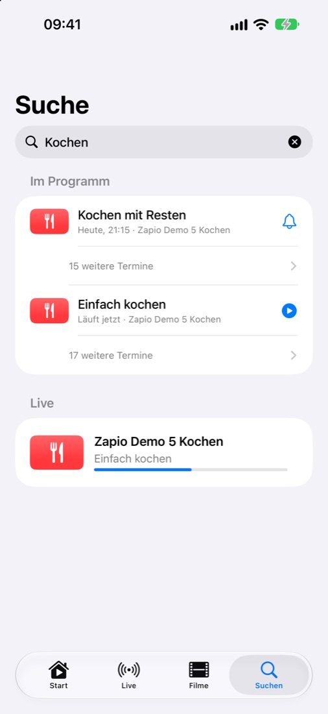
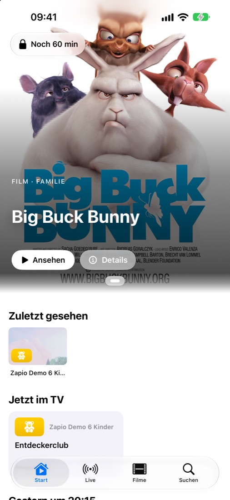
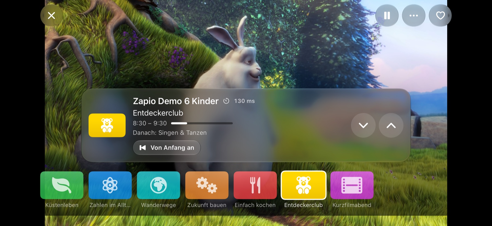

Fernsehen, wie es sein sollte.
Zapio macht aus deinem IPTV-Zugang ein Erlebnis wie am Fernseher: Sender wechseln in Sekundenbruchteilen, ein Programmführer, der mitdenkt, und Filme und Serien so übersichtlich wie in der TV-App.



Wischen. Schon läuft der nächste Sender.
Zapio zeigt sofort ein Standbild, verbindet im Hintergrund und kennt die Eigenheiten deines Anbieters – auch Zugänge mit nur einem gleichzeitigen Stream.
- Wischen, Pfeile oder Senderleiste
- Zurück zum vorigen Sender mit einem Tipp
- Automatischer Wechsel auf den eingebauten VLC-Player, wenn ein Format es verlangt
Was läuft gerade? Was kommt heute Abend?
Ein Programmführer über mehrere Tage, mit Archiv und „Von Anfang an“. Verpasstes schaust du nach, Kommendes merkst du dir mit einem Tipp.
- Erinnerung fünf Minuten vor Beginn
- „Immer erinnern“ für ganze Reihen wie den Tatort
- Wochenprogramm für jeden Sender

Eine Suche für alles.
Sender, Filme, Serien und Sendungen der nächsten Tage – in einem Feld. Umlaute, Akzente und Schreibweisen findet Zapio trotzdem.
- Wiederholungen zu einer Zeile zusammengefasst
- Direkt einschalten, erinnern oder nachschauen

Für die ganze Familie.
Ein Kindermodus mit eigener Auswahl und Fernsehzeit, eine PIN für die Eltern und gesperrte Kategorien, die wirklich überall verschwinden.
- Tageslimit mit sichtbarer Restzeit
- Inhalte für Erwachsene standardmäßig ausgeblendet
Großes Kino. Auch im Querformat.
Poster, Beschreibungen, Fassungen in mehreren Sprachen und Qualitäten, Weiterschauen an der richtigen Stelle – und Downloads für unterwegs.

Durchdacht bis ins Detail.
Downloads
Filme und Folgen für unterwegs laden – mit Fortschritt, Tempo und Pause während du schaust.
Bild-in-Bild & AirPlay
Weiterschauen, während du andere Apps nutzt, oder aufs große Bild bringen.
Erinnerungen
Nie wieder den Anfang verpassen – für einzelne Sendungen oder ganze Reihen.
Siri, Widget & Kurzbefehle
„Was läuft gerade?“ – fragen, einschalten, weiterschauen.
Mehrere Zugänge
Playlist-Links und Xtream-Zugänge, eigene Programmführer-Adresse, Zeitversatz je Quelle.
Privat by Design
Kein Konto, keine Werbung, kein Tracking. Deine Daten bleiben auf deinem Gerät.
Sieben Tage alles kostenlos testen. Danach einmal kaufen und für immer nutzen – mit Familienfreigabe.
Eine Version für Apple TV ist in Vorbereitung.
Zapio enthält keine Sender, Filme oder Serien und vermittelt keine. Die App spielt ausschließlich Quellen ab, die du selbst einträgst – zum Ausprobieren gibt es eine eingebaute Demo mit freien Teststreams.